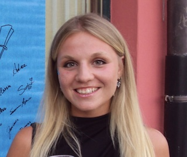
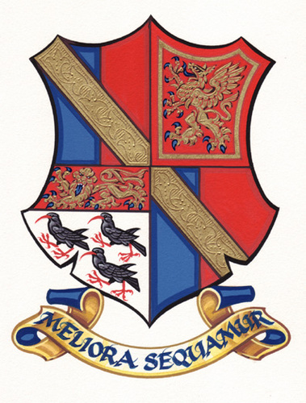
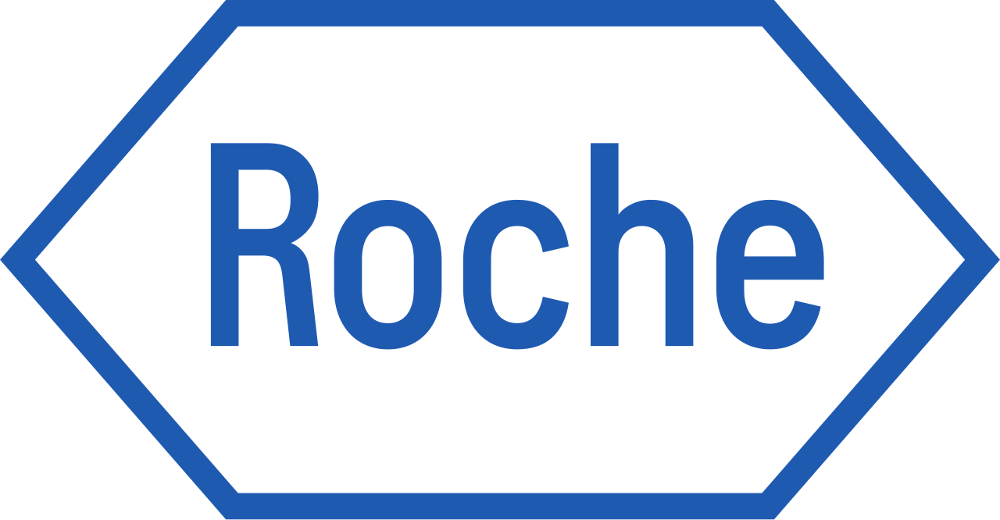

Alessia Santambrogio
PhD Graduate in Chemistry, University of Cambridge
Analytical PhD graduate with a strong foundation in translational research and biomarker development, taking a data-driven, strategic approach to navigating complex research problems.
Education
PhD Chemistry
2021 – 2025
University of Cambridge
Chemistry MChem
2017 – 2021
Durham University

A-levels
2015 – 2017
Simon Langton Girls' Grammar School
Experience

Postdoctoral Researcher
2025 – Present
Roche
Research Assistant & Supervisor
2021 – 2025
University of Cambridge
Scientific Consultant
2023 – 2024
WaveBreak Therapeutics
Invited Talks
EuroTau Conference
2023
Lille, France
International Symposium on Protein Interactions and Self-Assembly
2023
Lisbon, Portugal
Awards
MasterPrize in Chemistry
2021
Durham University
Chemistry Summer Bursary
2019
Durham University
A-level Chemistry Prize
2017
Simon Langton Girls' Grammar School